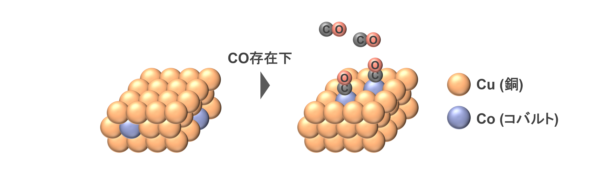

3. 量子アニーリングとは
量子アニーリングとは、「組合せ最適化問題を高速かつ正確に解くことができる計算技術」であり、本ページではその詳細を説明します。
3.1. 組合せ最適化問題とは
組合せ最適化問題とは、「膨大な選択肢の中からベストな選択肢を見つけ出す問題」であり、この組合せ最適化問題は「目的地までの最短経路の探索」といった日常的なシーンや「トラック内に多くの荷物を積み込むための荷物配置の最適化」といった配送業界のシーンなど様々なシーンに潜んでいます。

こういった組合せ最適化問題を解くことにより、早く目的地に到着できる経路の組合せや、必要とするガソリン/電気量や人件費を削減できる選択肢を導くことができます。
3.2. 従来の古典コンピュータでの限界
上記の組合せ最適化問題を数値的に解くことは難しく、古典コンピュータでベストな選択肢を見つけるためには、全ての組合せを確認するか近傍探索法などで近似的により良い解を見つけるかをする必要があります。
しかしながら、実社会において「目的地までの最短経路の探索」を行う場合、経路を決定する曲がり角の数は前に示した図よりとても多くなります。 また、現実的には「出発地と目的地の間の距離を最小とする経路を探索する」だけでなく、「複数の目的地をどの順番で行くか」や「混雑を回避するためにどの経路で行くか」などの情報を多く考慮する必要があります。
このように扱うデータ規模が増加した場合、検討すべき組合せの数が指数関数的に膨大化し、全ての組合せを確認するために膨大な処理時間や消費エネルギーが必要になります。 近年は半導体技術の向上が終焉に近づいているとされているため、古典コンピュータで実問題に近い組合せ最適化問題を解くことは難しいとされています。 また、近似的により良い解を見つける方法においても局所解に陥りやすいといった課題があり、局所解から脱して最適解を見つけ出すプロセスも必要となります。
3.3. アニーリングとは
このような課題を受け、高速かつ正確に組合せ最適化問題を解く手法として「アニーリング」に注目されました。 アニーリングとは一般的に「金属の焼きなまし」のことを指し、高温で熱した後に徐々に温度を下げていくことで金属の結晶組織を均一化して加工性を向上させることができます。
この均一化は、熱によって金属原子の位置がランダムに動き回り、徐々に冷却させることで内部エネルギーが最小となるような金属配列を形成していくことに起因します。
そのため、「金属の内部エネルギーの最小化」をもたらすアニーリングをコンピュータ上で再現することで、組合せ最適化問題におけるベストな選択肢を高速かつ正確に解くことができると着想されました。
実際に、金属の焼きなましにおける「金属配列」と「その内部エネルギー」をそれぞれ、組合せ最適化問題における「組合せ」と「その組合せの良さ」に置き換えて関数化することで、アニーリングのアルゴリズムを介して組合せ最適化の対象となる関数が最小/最大となるベストな選択肢を見つけ出すことができるとされています。
3.4. 量子アニーリングの特徴と利点
アニーリングでは「温度」を変えることでベストな選択肢を得ることができますが、量子アニーリングでは「量子効果」を変えることで制御し、 量子重ね合わせ や 量子トンネル効果 といった量子の性質を利用した最適化をすることができます。
- 量子重ね合わせ
古典コンピュータには情報を扱うために0か1を示すbitが複数あり、4bitあれば24個の組合せを別々に扱うことができます。 一方、量子コンピュータでは0と1の両方を同時に示すbitが複数あり、4bitあれば24個の組み合わせを同時に扱うことができます。 0と1を同時に示す状態を「量子重ね合わせ」と呼び、この性質を利用することで全ての組合せを一度に表現することができ、組合せ最適化に要する時間を削減できます。
- 量子トンネル効果
古典コンピュータでの近傍探索法では局所解に陥りやすいため、最適解を得るためには大きなエネルギー障壁を超える必要があります。 一方、量子コンピュータではエネルギー障壁を超えなくともすり抜けることができ、これを「量子トンネル効果」と呼びます。 これにより、容易に局所解から脱して最適解を得ることができ、組合せ最適化の高精度化が期待されます。
以上より、量子アニーリングでは量子効果を強めて徐々に弱めていくことにより、組合せ最適化問題におけるベストな選択肢を高速かつ正確に得ることができるとされています。
3.5. 量子アニーリングの応用と課題
現在は金融、交通、材料、創薬など、実用的なケースから応用的なケースまで量子アニーリングの適用が進んでいます。
一方で、組合せの最適化をしたい対象の関数化やbit数の不足など様々な困難があり、今後より容易な関数化やbit数の増加などが期待されている。